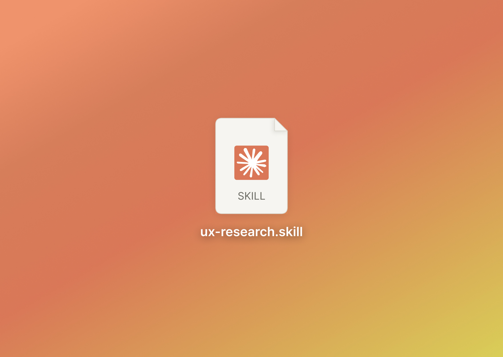
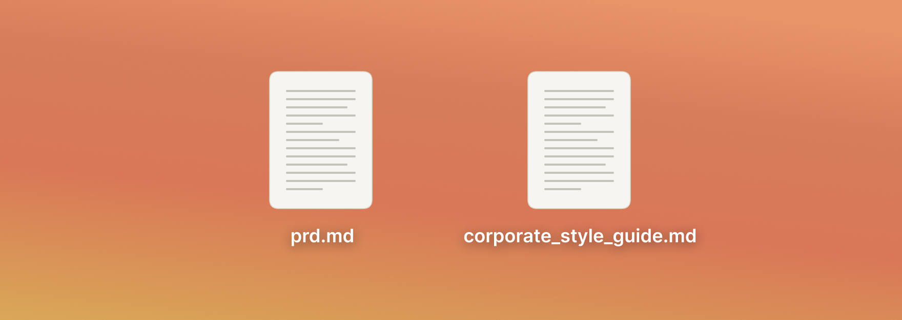
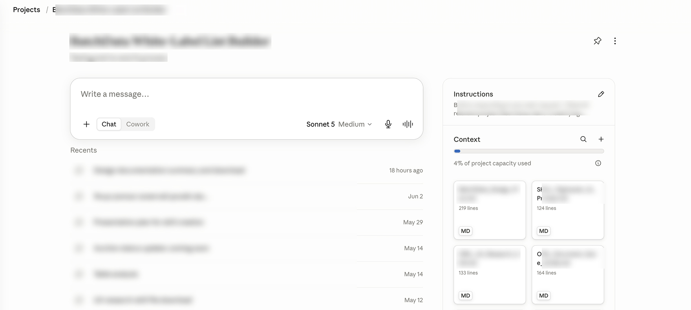
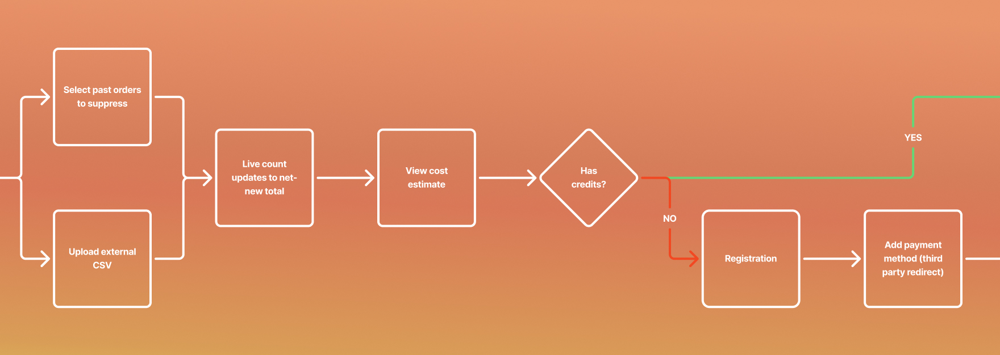
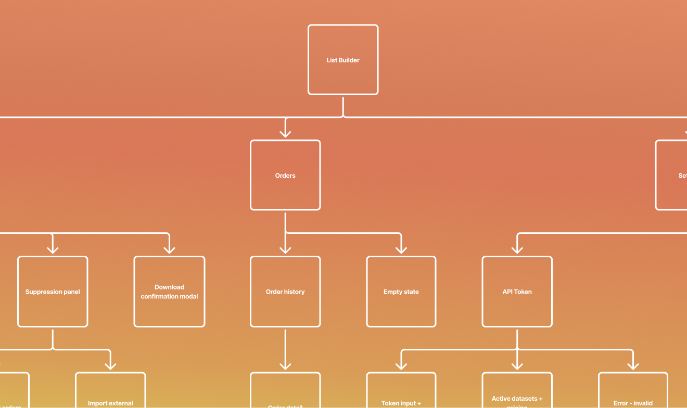
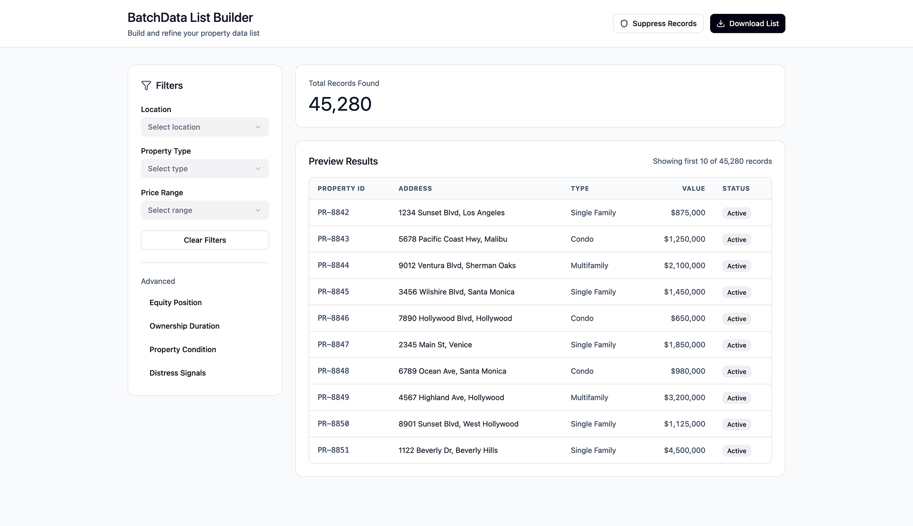
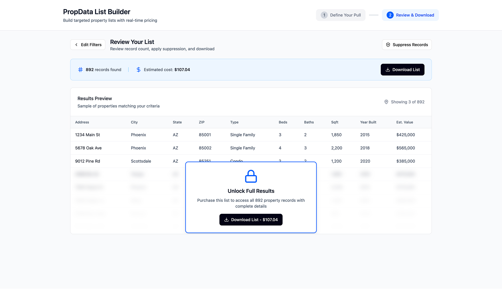
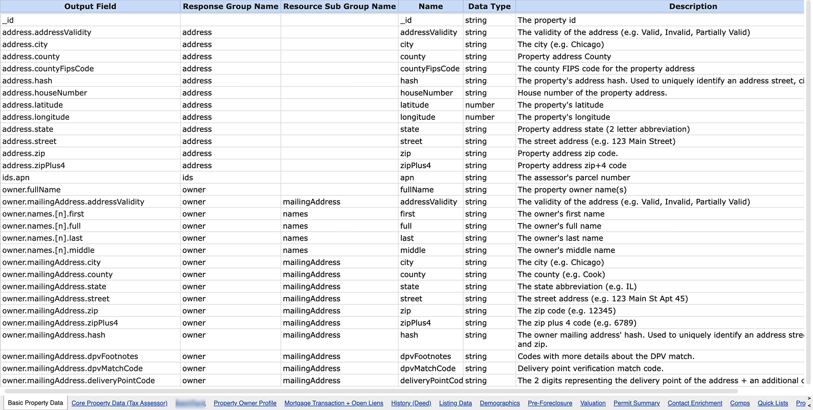
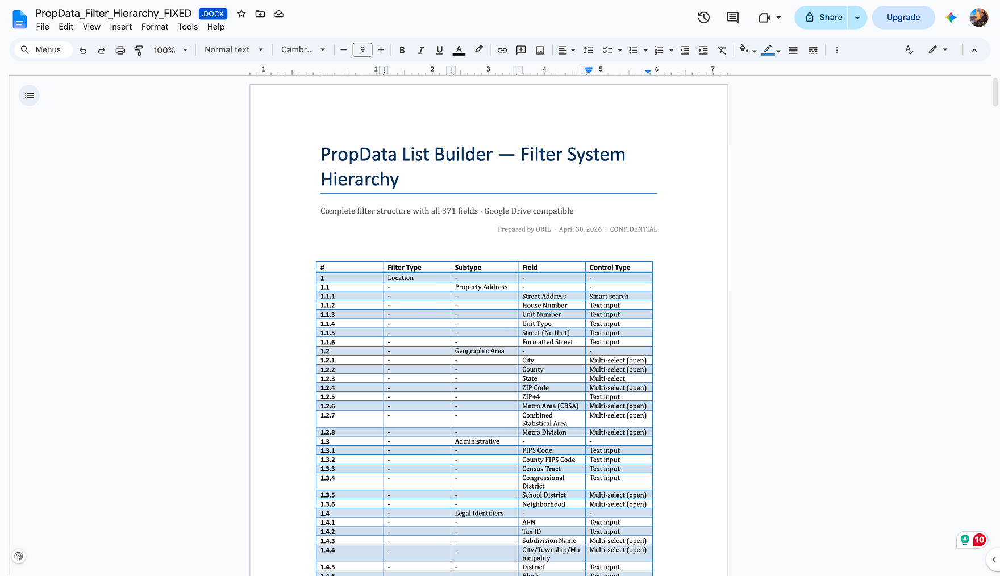
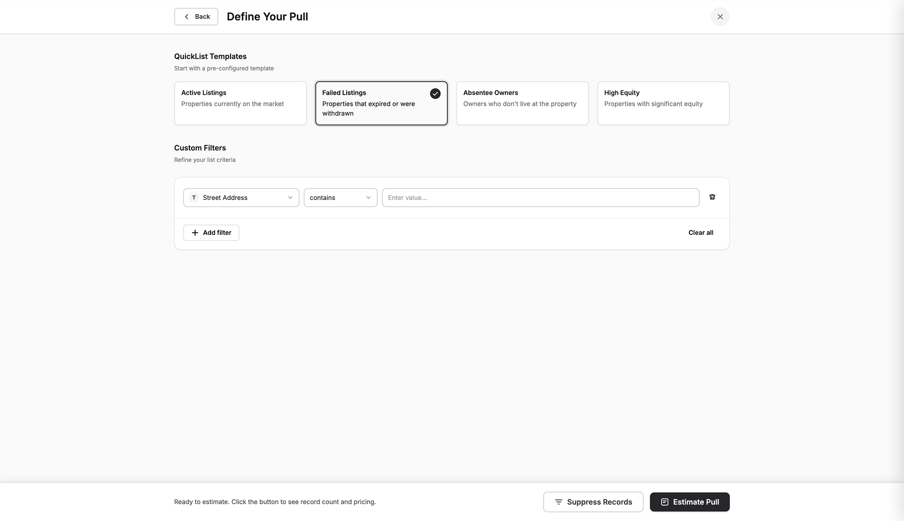

AI-Native UX/UI Design
AI-Native UX/UI Design Workflow on a Team Level

- We aimed to structure a repeatable AI-native design process at the agency level.
- A previously completed project became the test case, comparing AI-native and conventional workflows directly.
- The project was a white-label SaaS + API platform for real estate, handling large-scale data.
- The Business Analysis team began by reviewing the client brief and stakeholder interview scripts.
- Design work started from the PRD.
Setting up the project
When starting a new project with a tool like Claude, I like to give it full context up front and sketch the working path. I write this as a plain-text "behavior prompt" — instructions on how the assistant should act, what to do, and when.
- The project was a white-label SaaS + API platform for real estate, handling large-scale data.
- The Business Analysis team began by reviewing the client brief and stakeholder interview scripts.
- Design work started from the PRD.
Behavior prompt example:

First step along the way — Context analysis & Planning
Based on the context analysis, and after confirming Claude interpreted it correctly, we framed the plan. It evolved over time, but it laid the foundation for the whole workflow and project.
Research Plan (UX Research):
- Project setup in Claude and Perplexity
- PRD analysis
- Competitor research
- User persona generation
- Synthetic user interviews
- Key User Flows generation
- Information Architecture generation
- Summary with “open questions for discussion”
Context analysis prompt example:
- Selecting the appropriate style
- Style analysis in Claude
- Design system generation
- Design generation
- Prototype generation
Moving step by step, building project context base
The process is iterative, flexible, and human-driven — Claude does the work, while the professional tracks and directs the process. Each step's results are summarized and added to the project context as an .md file, building a knowledge base for future decisions.

Other artifacts along the way
Using other tools and connecting these with MCP, nowadays it is possible to visualise any of the steps. Which helps to bring the context to the discussion with the key stakeholders.
Artifact example 1: User Flow

Artifact example 2: Informational Architecture

Challenge 1: Forming skill and iterating on it
After the UX research phase, I moved to generation — a low-fidelity, vibe-coded prototype. This let us sync with stakeholders efficiently and figure out the right direction.
Data estimate screen — version 1

Data estimate screen — version 2
Team sync sessions showed version 1 was missing a full table preview — showing the first few records, then locking the rest until the user paid. After payment, the full list becomes accessible and downloadable.

Skill forming and improvement point
At that point, the skill was based on the initial workflow plan. As the process evolved, we updated the skill to cover problems the team had identified:
1. Business Model Review
Added to run before personas, interviews, and flows — it clarifies how the business actually operates, e.g. when payment should be processed.
2. Single Experience Audit
Added after all individual flows are mapped, before IA/wireframing. It merges key flows into a single coherent experience. For example, two originally separate flows — filtering to form the records list, and suppressing records — were combined into one, since the list must be formed before it can be suppressed.
Challenge 2: Filtering
The filtering feature was built during the first iteration but was fairly simple. As a result, Claude wasn't able to fully interpret it even with complete context — the actual user need was fully flexible filtering, with the ability to control any data type.
Data entyties example
I asked for a database of all the entities the business, as a provider, exposes, and received a complex data file with 15+ tables.

Formed filters document
Based on the full entities database, I built the filters document over several iterations with Claude, making sure the structure was logical — some entities, like Address Validity, aren't filterable at all. This produced a final, fully documented structure with nested levels for Filter Type, Subtype, etc., mirroring the actual filtering UI.

Filtering feature
HTML-coded prototype representing the design, logic, and full interaction of the filtering feature. This shipped as the resolved filtering system, replacing the earlier simplified version.

Result: UX Research skill
It wasn't clear from the start that this should become a skill — we began by documenting the process as steps, prompts, and instructions in a plain document. Later, I realized it fit naturally as a formal skill. Seeing examples of Claude Skills and plugins in the community inspired me to convert the workflow into a skill, since its scope was narrower than a full plugin.
Key Performance Indicators:
Contact Information
+48 504 819 661